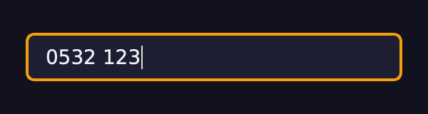
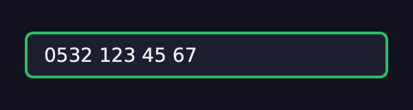
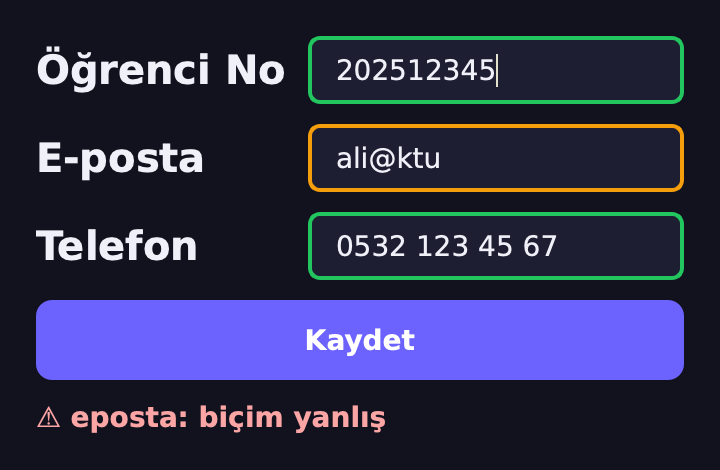

Desen Yaz,
Python Bulsun
Düzenli İfadeler (Regular Expressions)
Biçimi Bir Kez Tarif Et
H7'de “bu metin sayı mı?” sorusunu tek tek if'lerle cevapladık. Bu hafta
biçimi küçük bir dille, desenle, tarif edeceğiz; Python o deseni metinde arayacak.
1 · Desen dili
\d \w [ ] + * {n,m} ^ $:
bir avuç işaret.
2 · re
search,
fullmatch, findall, sub, split.
3 · Gruplar
( ), adlı gruplar,
açgözlü .+ ile tembel .+?.
4 · Qt'de
Yanlış tuşu yazdırmayan doğrulayıcı ve yazarken renk değiştiren kutu.
Sonunda: H7'deki kayıt formuna öğrenci no, e-posta ve telefon desenleri.
Girdiyi Tek Tek Yakalamıştık
🧮 int() sürprizleri
'1_000'
→ 1000, '١٢' → 12. Aralık denetimi ekledik.
⚖️
isdigit() tuzağı
'²' rakam sayıldı ama okunamadı;
'-3' okundu ama rakam sayılmadı.
🏷️
FormHatasi(alan, mesaj)
Hata hangi kutudan geldiğini söylüyordu. Bu hafta yine kullanacağız.
Hep aynı soru: “bu metin şu biçimde mi?”
Biçim karmaşıklaştıkça if'ler çoğalır. Biçimi tarif eden bir dil işimizi kısaltır.
Bir Telefon Numarası Sekiz Satır
def telefon_mu(s): # "0532 123 45 67" mi?
parca = s.split(" ")
if len(parca) != 4:
return False
for p, n in zip(parca, [4, 3, 2, 2]):
if len(p) != n or not p.isdigit():
return False
return s[0] == "0"
telefon_mu("0532 123 45 67") # True
telefon_mu("0532 123 4567") # False
telefon_mu("0532 ١٢٣ 45 67") # True😬 Son satır
Arap-Hint rakamları
isdigit()'ten geçti (H7): True.
🔁 Yeni biçim?
0532-123-45-67 de
kabul edilecekse fonksiyonu baştan yaz.
Aynı Kural, Tek Satır
import re
desen = r"0\d{3} \d{3} \d{2} \d{2}"
re.fullmatch(desen, "0532 123 45 67")
# <re.Match object; span=(0, 14), match='0532 123 45 67'>
re.fullmatch(desen, "0532 123 4567") # None
bool(re.fullmatch(desen, "0532 ١٢٣ 45 67")) # True
re.fullmatch(desen, "0532 ١٢٣ 45 67", re.ASCII) # None🧩 r"…" · \d{3}
Ham dize:
ters bölü regex'e gider. \d{3} = tam 3 rakam.
⚠️ Dürüst not
Python'da \d her Unicode rakamını sayar. Yalnız 0–9: re.ASCII ya da
[0-9].
Bir Avuç İşaret
| işaret | anlamı | örnek desen | metin | re.findall |
|---|---|---|---|---|
| . | herhangi bir karakter | a.c | 'abc a-c ac' | ['abc', 'a-c'] |
| \d | rakam | \d\d | 'a42b7' | ['42'] |
| \w | harf, rakam ya da _ | \w+ | 'çay_2 !' | ['çay_2'] |
| \s | boşluk, sekme, satır sonu | \s+ | 'a \t b' | [' \t '] |
| [ … ] | bunlardan biri | [aeıioöuü] | 'kitap' | ['i', 'a'] |
| [^ … ] | bunlar dışında | [^0-9]+ | 'ab12c' | ['ab', 'c'] |
| * + ? | 0+, 1+, 0 ya da 1 kez | ab+ | 'a ab abbb' | ['ab', 'abbb'] |
| {n,m} | n ile m kez arası | \d{2,3} | '1 12 1234' | ['12', '123'] |
| ^ $ | başta / sonda | ^\w+ | 'ilk son' | ['ilk'] |
| \b | kelime sınırı | \bev\b | 'ev evler ev' | ['ev', 'ev'] |
| | | ya da | kedi|köpek | 'kedi ve köpek' | ['kedi', 'köpek'] |
| \. | gerçek nokta (kaçış) | \d\.\d | '3.5 ve 3x5' | ['3.5'] |
Bir Desen Seç, Ne Yakaladığını Gör
Vurgular Python'un re.finditer'ından, liste
re.findall'dan alındı.
search,
match, fullmatch
metin = "Sipariş 42: 3 kalem, toplam 129 TL"
re.search(r"\d+", metin) # her yerde ara
# <re.Match object; span=(8, 10), match='42'>
re.match(r"\d+", metin) # None
re.match(r"Sipariş", metin) # yalnız BAŞTA
# <re.Match object; span=(0, 7), match='Sipariş'>
re.fullmatch(r"\d+", "129") # TAMAMI uymalı
# <re.Match object; span=(0, 3), match='129'>
re.fullmatch(r"\d+", "129 TL") # None
m = re.search(r"\d+", metin)
m.group(), m.start(), m.end() # ('42', 8, 10)🔍 search
Metnin herhangi bir yerinde ilk eşleşme.
🚪 match
Yalnız baştan; sonu serbest.
✅
fullmatch
Metnin tamamı. Doğrulamada doğru seçim bu. Sonuç None ya da Match.
Hepsini Bul, Değiştir, Böl
metin = "Sipariş 42: 3 kalem, toplam 129 TL"
re.findall(r"\d+", metin) # ['42', '3', '129']
[m.span() for m in re.finditer(r"\d+", metin)]
# [(8, 10), (12, 13), (28, 31)]
re.sub(r"\d+", "#", metin)
# 'Sipariş #: # kalem, toplam # TL'
re.split(r"[,:]\s*", metin)
# ['Sipariş 42', '3 kalem', 'toplam 129 TL']
re.sub(r"\s+", " ", "çok fazla \t boşluk")
# 'çok fazla boşluk'📋 findall / finditer
Bütün eşleşmeler: liste ya da Match'ler.
✏️ sub · ✂️ split
Eşleşeni değiştir; desenle böl (virgül ya da iki nokta).
Desen Okuma
re.match(r"\d+", "yaş 42") ne döndürür?re.findall(r"\d{2,3}", "2024")?( ):
Parçayı Ayrıca Al
tarih = "Teslim: 2026-11-03, sınav: 2026-11-17"
m = re.search(r"(\d{4})-(\d{2})-(\d{2})", tarih)
m.group(0) # '2026-11-03'
m.group(1), m.group(3) # ('2026', '03')
m.groups() # ('2026', '11', '03')
re.findall(r"(\d{4})-(\d{2})-(\d{2})", tarih)
# [('2026', '11', '03'), ('2026', '11', '17')]🔢 Numara
group(0) bütün eşleşme;
group(1) ilk parantez, soldan sayılır.
📋 findall + grup
Grup varsa eşleşmenin tamamını değil, grupların demetini verir.
(?P<ad>…):
Numara Yerine Ad
desen = r"(?P<yil>\d{4})-(?P<ay>\d{2})-(?P<gun>\d{2})"
m = re.search(desen, "Teslim: 2026-11-03")
m["yil"], m["gun"] # ('2026', '03')
m.groupdict()
# {'yil': '2026', 'ay': '11', 'gun': '03'}
yeni = r"\g<gun>.\g<ay>.\g<yil>" # adla geri çağır
re.sub(desen, yeni, "Teslim: 2026-11-03")
# 'Teslim: 03.11.2026'🏷️ Okunur
m["yil"], 3 ay sonra da
ne olduğunu söyler; m.group(1) söylemez.
🔁 \g<ad>
sub'da
grubu adıyla geri koy: ISO tarihten Türk biçimine.
.+ ile
.+? Arasındaki Fark
html_ = "<b>kalın</b> ve <i>eğik</i>"
re.findall(r"<.+>", html_) # açgözlü: olabildiğince ÇOK
# ['<b>kalın</b> ve <i>eğik</i>']
re.findall(r"<.+?>", html_) # tembel: olabildiğince AZ
# ['<b>', '</b>', '<i>', '</i>']
re.findall(r"<[^>]+>", html_) # açık: '>' olmayan her şey
# ['<b>', '</b>', '<i>', '</i>']🍔 Açgözlü
+ * olabildiğince
çok yer, son >'ye kadar gider.
🥄 Tembel
+? *? olabildiğince
az; ilk >'de durur.
Aynı Metin, Yedi Desen
Eşleşmeler Python'un re.finditer'ından alındı;
ardışık eşleşmeler iki renkle.
re.M,
re.I, re.A
liste = "elma\narmut\nkiraz"
re.findall(r"^\w+", liste) # ['elma']
re.findall(r"^\w+", liste, re.M)
# ['elma', 'armut', 'kiraz']
bool(re.fullmatch("istanbul", "İSTANBUL", re.I)) # True
bool(re.fullmatch("ılık", "İLİK", re.I)) # True
"İSTANBUL".lower() == "istanbul" # False
len("İ".lower()) # 2
re.findall(r"\d", "4٢", re.A) # ['4']📄 re.M
^ ve
$ her satırda çalışır.
🔠
re.I ve Türkçe
i ı İ I'yı birbirine denk sayar: “ılık” ile
“İLİK” bile eşleşir. lower() ise “İ”yi iki karaktere çevirir.
🔤 re.A
\d \w \s
yalnız ASCII.
re.compile
+ re.X: Desene Yorum Yaz
eposta = re.compile(r"""
[\w.+-]+ # kullanıcı adı: harf, rakam, . + -
@
[\w-]+ # alan adı
(\.[\w-]+)+ # .edu .tr … en az bir nokta
""", re.X)
bool(eposta.fullmatch("ali.veli@ktu.edu.tr")) # True
bool(eposta.fullmatch("ali@localhost")) # False
bool(eposta.fullmatch("çağrı@ktu.edu.tr")) # True
bool(eposta.fullmatch("ali@@ktu.edu.tr")) # False📦 compile + 📝 re.X
Bir kez
derle, sakla. re.X'te boşluk yok sayılır, # yorum olur.
🤏 Sınır
Bu desen e-postanın biçimine bakar, adresin var olup olmadığına değil.
Aynı \w,
Üç Farklı Cevap
Q = QRegularExpression
def qt_bul(desen, metin, sec=Q.NoPatternOption):
it = Q(desen, sec).globalMatch(metin)
bulunan = []
while it.hasNext():
bulunan.append(it.next().captured())
return bulunan
metin = "Çağrı ışığı söndü"
re.findall(r"\w+", metin) # ['Çağrı', 'ışığı', 'söndü']
qt_bul(r"\w+", metin) # ['a', 'r', 's', 'nd']
U = Q.UseUnicodePropertiesOption
qt_bul(r"\w+", metin, U) # ['Çağrı', 'ışığı', 'söndü']| motor | \w+ · "Çağrı ışığı söndü" | \d+ · "٤٢ ve 42" |
|---|---|---|
| Python | ['Çağrı', 'ışığı', 'söndü'] | ['٤٢', '42'] |
| Python + re.A | ['a', 'r', 's', 'nd'] | ['42'] |
| Qt | ['a', 'r', 's', 'nd'] | ['42'] |
| Qt + Unicode | ['Çağrı', 'ışığı', 'söndü'] | ['٤٢', '42'] |
| JS /g | ['a', 'r', 's', 'nd'] | ['42'] |
| JS /gu | ['a', 'r', 's', 'nd'] | ['42'] |
Python (str
deseni) Unicode'u varsayar; Qt ve JavaScript ASCII'yi. Desen bir dilden ötekine taşınırken
\w ve \d anlam değiştirir.
QRegularExpressionValidator
desen = QRegularExpression(r"0\d{3} \d{3} \d{2} \d{2}")
v = QRegularExpressionValidator(desen)
v.validate("0532 ", 5)[0] # <State.Intermediate: 1>
v.validate("0532 12a", 8)[0] # <State.Invalid: 0>
v.validate("0532 123 45 67", 14)[0] # <State.Acceptable: 2>
kutu = QLineEdit()
kutu.setValidator(v) # Invalid tuşu yazdırmaz
kutu.setPlaceholderText("0532 123 45 67")🟡 Intermediate
Eksik ama tamamlanabilir: yazmaya devam.
🔴 Invalid
Qt o tuşu yazdırmaz: "05a32" yazınca kutuda "0532" kalır.
🟢 Acceptable
Tam uydu: hasAcceptableInput() → True.
Qt Bu Girdiye Ne Der?
Her durum v.validate(metin, len(metin)) ile Qt'de
alındı; desen 0\d{3} \d{3} \d{2} \d{2}.
textChanged
+ fullmatch
class TelefonKutusu(QLineEdit):
DESEN = re.compile(r"0[0-9]{3} [0-9]{3} [0-9]{2} [0-9]{2}")
def __init__(self):
super().__init__()
self.setPlaceholderText("0532 123 45 67")
self.textChanged.connect(self.denetle)
def denetle(self, metin):
if self.DESEN.fullmatch(metin):
renk = "#22c55e" # tam ve doğru
elif metin:
renk = "#f59e0b" # eksik ya da yanlış
else:
renk = "#33335a" # boş
self.setStyleSheet(f"border: 2px solid {renk}")
k = TelefonKutusu()
k.setText("0532 123")
k.styleSheet() # 'border: 2px solid #f59e0b'

[0-9] bilerek: \d
olsaydı Arap-Hint rakamları da yeşil yanardı.
Kullanıcı Nasıl Yazarsa Yazsın
def normalle(s):
rakam = re.sub(r"[^0-9]", "", s) # rakam dışını sil
rakam = rakam[-10:] # son 10 hane
return re.sub(r"(\d{3})(\d{3})(\d{2})(\d{2})",
r"0\1 \2 \3 \4", rakam)
girdiler = ["+90 (532) 123-45-67", "0532.123.45.67",
"5321234567"]
[normalle(s) for s in girdiler]
# ['0532 123 45 67', '0532 123 45 67', '0532 123 45 67']🧽 Önce temizle
[^0-9]: rakam
olmayan her şeyi sil; parantez, tire, nokta, +.
🧩 Sonra biçimle
Dört grup, \1 \2 \3
\4 ile tek bir düzgün biçime.
Masum Görünen Yavaş Desen
kotu = re.compile(r"(a+)+$") # iç içe nicelik: tehlikeli
iyi = re.compile(r"a+$") # aynı işi yapan sade desen
s = "a" * 24 + "!" # sonda uymayan tek karakter
kotu.match(s), iyi.match(s) # (None, None)🌀 Neden?
Sonda ! olduğu için eşleşme yok; ama
(a+)+ “a”ları gruplara bölmenin her yolunu dener. Bu yollar her ek “a” ile
ikiye katlanır.
| n (a sayısı) | (a+)+$ | a+$ |
|---|---|---|
| 16 | 1.2 ms | 0.000 ms |
| 18 | 4.5 ms | 0.000 ms |
| 20 | 18.4 ms | 0.001 ms |
| 22 | 73.7 ms | 0.001 ms |
| 24 | 292.2 ms | 0.001 ms |
Süreler bu derste
kullanılan bilgisayarda ölçüldü; sizinkinde sayılar farklı, büyüme aynı. İç içe nicelikten
((…+)+) kaçının; kullanıcıdan gelen deseni hiç çalıştırmayın.
Ne Zaman Regex, Ne Zaman Değil?
| iş | en iyi araç | neden |
|---|---|---|
| “.pdf ile bitiyor mu?” | str.endswith | sabit metin: regex gereksiz |
| sayıya çevir | int() + try (H7) | aralık ve tür denetimi birlikte |
| no, telefon, tarih biçimi | re.fullmatch | biçim tek satırda, okunur |
| metinden parça çek | finditer + gruplar | hepsini bir geçişte bulur |
| yanlış tuşu hiç yazdırma | QRegularExpressionValidator | kullanıcı yazarken süzer |
| HTML, JSON, CSV oku | html.parser, json, csv | iç içe yapı: regex kırılır |
Qt ve Türkçe
QRegularExpression(r"\w+").match("çağrı").captured()?kutu.setText("0532 12a") ne yapar?Sık Yapılan Hatalar
🔙 r'yi unutmak
"\bev\b"'de \b geri silme karakteri
olur: sonuç []. Desenler hep r"…".
🚪 match ile doğrulamak
re.match(r"\d{9}", "2025123456") 10 haneyi
kabul eder; sonu serbest. Doğrulamada fullmatch.
⚫ Kaçışsız nokta
r"3.5", "3x5"'e de uyar. Gerçek nokta
\..
🇹🇷 [a-z] ile Türkçe
"çağrı"'dan yalnız ['a', 'r']
kalır. \w ya da [a-zçğıöşü].
Kural: deseni küçük örneklerle dene; bir uyan, bir uymayan, bir de sınırda olan.
Bu Hafta Ne Öğrendik?
✅ Desen = biçimin tarifi; hep ham dize r"…"
✅ \d \w \s [ ] ve * + ? {n,m}, ^ $ \b
✅ search her yerde, match baştan, fullmatch tamamı
✅ findall, finditer, sub, split
✅ Gruplar ( ), adlı gruplar (?P<ad>…), \g<ad>
✅ Açgözlü .+ çok, tembel .+? az yer
✅ Python Unicode, Qt ve JS ASCII: \w, \d taşınırken değişir
✅ QRegularExpressionValidator: Invalid tuş yazılmaz
Proje: Desenli Kayıt Formu
H7'deki form, bu kez her kutunun biçimi bir desen.
class FormHatasi(Exception): # H7'deki gibi
def __init__(self, alan, mesaj):
super().__init__(mesaj)
self.alan = alan
DESENLER = {
"no": r"\d{9}", # 9 rakam
"eposta": r"[\w.+-]+@[\w-]+(\.[\w-]+)+",
"tel": r"0\d{3} \d{3} \d{2} \d{2}",
}
def denetle(alan, metin):
if not re.fullmatch(DESENLER[alan], metin, re.A):
raise FormHatasi(alan, "biçim yanlış")
return metin
denetle("no", "202512345") # '202512345'
denetle("no", "2025١٢٣٤٥")
# FormHatasi: biçim yanlış
🎯 Hedef
“ali@ktu” → e-posta turuncu, “⚠ eposta: biçim yanlış”. “ali@ktu.edu.tr” → “✓ Kaydedildi”. Süre: ~40 dk.
Üç Kutu, Tek Döngü
class KayitFormu(QWidget):
ALANLAR = {"no": "Öğrenci No", "eposta": "E-posta",
"tel": "Telefon"}
def __init__(self):
super().__init__()
form = QFormLayout(self)
self.kutular = {}
for alan, etiket in self.ALANLAR.items():
kutu = QLineEdit()
kutu.textChanged.connect(
lambda metin, a=alan: self.boya(a, metin))
self.kutular[alan] = kutu
form.addRow(etiket, kutu)
... # GÖREV 2: tel'e validator, Kaydet + durum
def boya(self, alan, metin):
... # GÖREV 1: tam uyan yeşil, eksik turuncu🪤 a=alan
Döngüdeki
lambda, alan'ı çağrıldığı anda okur: varsayılan değer olmadan üç kutu da
"tel"'i boyardı.
🗂️ Sözlük yine
DESENLER[alan] ve
self.kutular[alan] aynı anahtarla eşleşir.
Adım Adım Nasıl İlerleyeceksin?
1 · Desenleri dene
Her desen için bir uyan, bir uymayan:
denetle("no", "2025١٢٣٤٥") hata vermeli.
2 · boya
fullmatch (re.A)
→ yeşil; boş değilse turuncu; boşsa gri kenar.
3 · Validator
Telefona
QRegularExpressionValidator: yanlış tuş hiç yazılmasın.
4 · Kaydet
H7'deki gibi: try'da üç
denetle, except FormHatasi as e → ⚠ {e.alan}: {e}.
✅ Kontrol: “ali@ktu” → ⚠ eposta: biçim yanlış;
“ali@ktu.edu.tr” → ✓ Kaydedildi.
İleri Görevler Erken Bitirdiysen
⭐ Normalle
Telefonu “+90 (532)…” gibi de kabul et:
kaydetmeden önce normalle() ile tek biçime çevir.
⭐⭐ Desen test aracı
İki kutu: desen ve metin.
finditer sonuçlarını bir QLabel'da renkli göster (HTML ile).
⭐⭐⭐ Log çözücü
H7'nin kayit.log'unu oku;
adlı gruplarla seviye, ileti ayır, kaç ERROR olduğunu say.
Hepsinde aynı alışkanlık: önce küçük örnekle dene, sonra koda koy.
Thread Programlama
Şimdiye kadar her iş anında bitti. Ya bir iş 10 saniye
sürerse? Pencere donar. Sıradaki konu: işi arka plana almak, Qt'nin QThread'i ve
sinyallerle güvenli haberleşme.